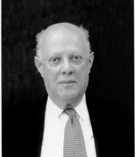

Please note: the AAS Obituaries are temporarily being hosted on this website while their full content is being ingested into the PubPub publishing platform newly adopted by the Bulletin of the American Astronomical Society. When the migration is complete, your existing links will take you to the final, migrated content. Contact peter.williams@aas.org with any questions.
Leonida Rosino (1915-1997)
Leonida Rosino, Professor emeritus of Astronomy at the University of Padua and former Director, for 30 years, of the Padova and Asiago Observatories, died in Padova on July 31, 1997, at the age of 81. Born in Treviso (Italy) on September 19, 1915, Rosino receive his degree in physics at the University of Padova. His advisor was Bruno Rossi, then Director of the Padova Physics Institute.
He then spent the first 15 years of his career at the University of Bologna before moving back to Padova.
He was scientifically active until his last days, when he transmitted to Asiago his observing program to be carried out with the Schmidt telescopes. Rosino will be remembered both for his scientific research and for the role he had in promoting Italian astronomy. Rosino's scientific activity was mainly devoted to variable stars. He started, just two years before World War II, a systematic study of RR Lyrae stars in globular clusters, carried out for more than two decades. The results are summarized in a classical paper published in 1975 in Vistas in Astronomy, where all the data then available on the cluster variables are summarized and the distances to the clusters are derived, so that a remarkable galactic map is constructed.
The cataclysmic variables, particularly those of the U Geminorum type, were also the subject of several of his investigations. When Rosino came to Asiago, he devoted himself to the explosive phases of novae, studying almost 20 novae both photometrically and spectroscopically, and describing their behavior from the outburst phase down to the quiescent stage. More recently, he and his colleagues carried out a quantitative study of the physical properties of the ejected material. Novae in M31 and M33 were also surveyed by Rosino for many years, demonstrating the dependence of nova rates on the morphological type of the parent galaxy. He also examined light curves of novae in Andromeda and calibrated the relation between apparent magnitude at maximum and the rate of decline. The supernova search carried out for more than 20 years at Asiago by Rosino gave worldwide reknown to the Observatory.
More than 30 supernovae were discovered and followed up photometrically and spectroscopically. Another key paper by Rosino and his collaborators, "On the Light Curves and Properties of Type I Supernovae," published in 1973, was based on these data. Leonida Rosino and his colleagues and close friends, Gugliemo Righini and Livio Gratton, changed the focus of Italian astronomy by introducing astrophysical research. Much of Rosino' s effort went into the development of Asiago Observatory including the 40-50 cm and 65-90 cm Schmidt telescopes and the 182 cm reflector, in 1958, 1967, and 1973, respectively.
With these plus the original 122 cm reflector, Asiago became the center of Italian observational astronomy, with the facilities used by astronomers not only from Italy but from all over the world down to the present. Rosino gave a strong impulse to the organization of astronomical studies in Padova. This University and that in Bologna are the only two institutions in Italy that offer a full curriculum, from undergraduate to graduate studies, in astronomy. Just before his death, Rosino had the opportunity to see realized one of the dreams of his life, with the opening of the Italian National Telescope, of which he had been the chief promoter, in the Canary Islands. Leonida Rosino was honored by the Prize of the Italian Ministry of Education, and he received honorary degrees from the Universities of Basel and Innsbruck.
Photo courtesy of Francesco Bertola.
Obituary written by: Francesco Bertola (University of Padova)
BAAS Citation: BAAS, 1999, 31, 1610
SAO/NASA ADS Bibcode: 1999BAAS...31.1610B